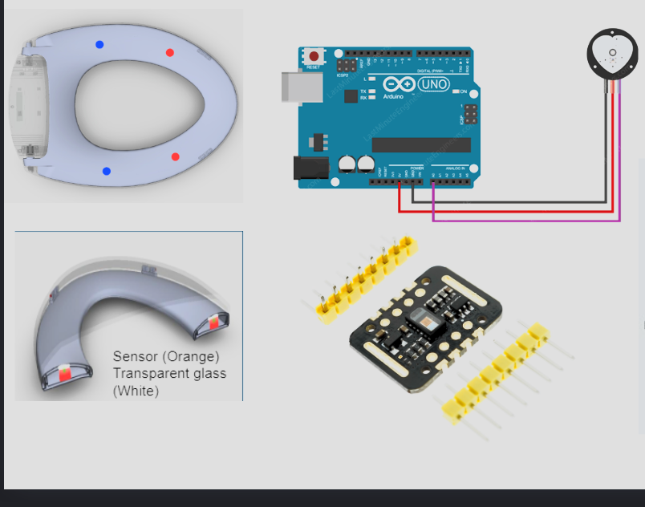
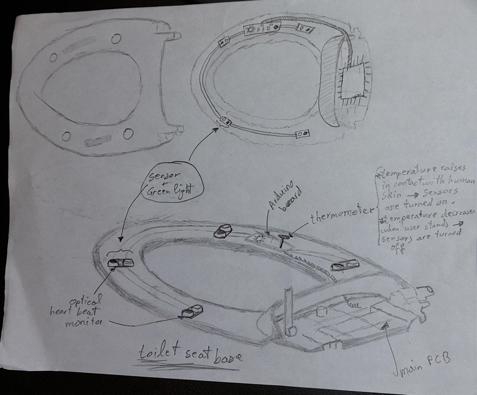
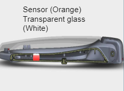
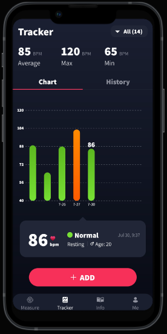

Smart Toilet Seat – Electrical Integration (Bemis)
Overview
Contributed to the development of a smart toilet seat system in collaboration with Bemis Manufacturing, focusing on electrical functionality, sensor integration, and documentation of design decisions.
What I Did
- Contributed to system-level electrical design and component integration.
- Assisted with testing of electrical features and documented results.
- Worked with engineers to align the prototype with product requirements and constraints.
- Used a Pugh Matrix and structured decision tools to select priority product features.
System Images




Results
- Supported development of a functional smart consumer product concept.
- Gained experience working with industry standards and real-world constraints.
- Strengthened collaboration and communication skills in an industrial setting.